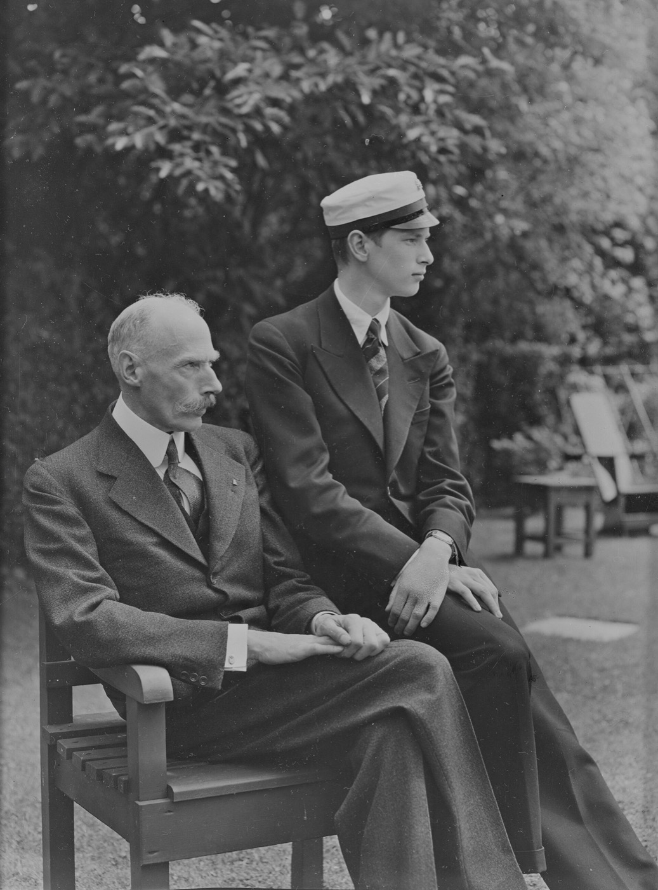

Personlig invitation til
Medlem nr.
Sam & Tristan
Privat og personlig. Må kun åbnes af modtageren.

For én nat er du medlem.
Fold ud
Sam & Tristan
er blevet studenter og inviterer dig til studentergilde.
Torsdag 15. juli 2027
Kl. 21 til sent
Gyntelsbjerg 1
Dresscode: fint
Tre af brevene har en guldbillet. Ligger der en i dit, har du vundet en flaske.
Scan og tilmeld dig
Svar senest 1. juli 2027. Har du en guldbillet, så skriv koden på siden, og tag billetten med på aftenen.